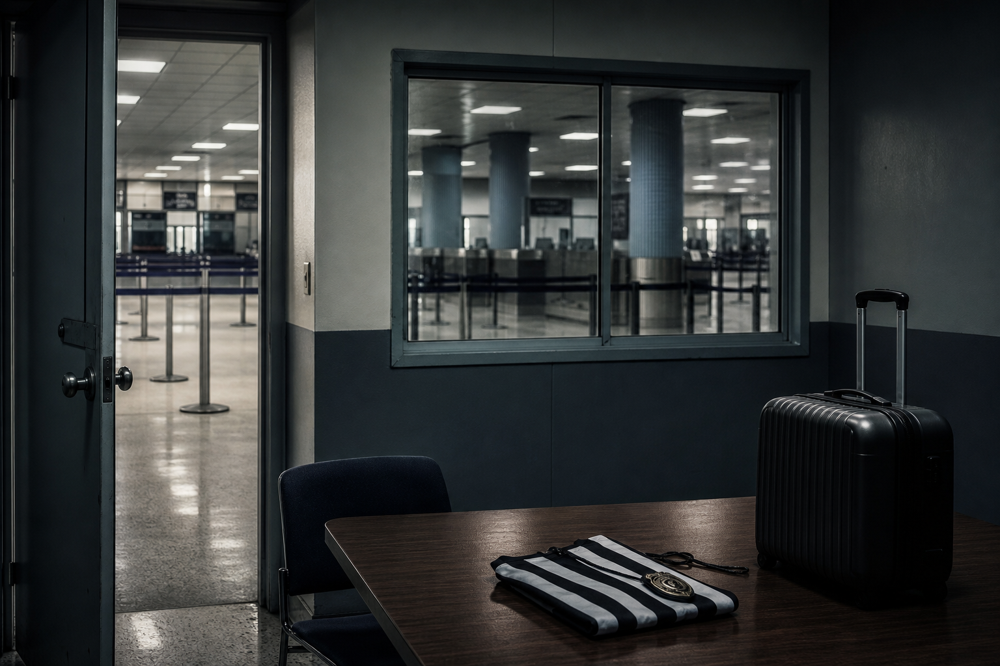
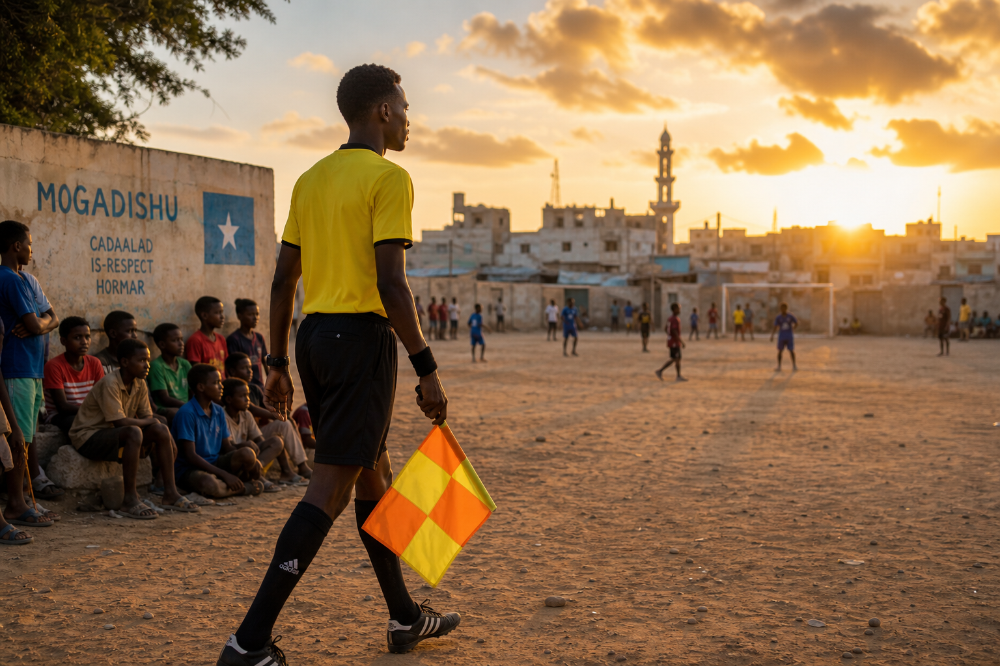
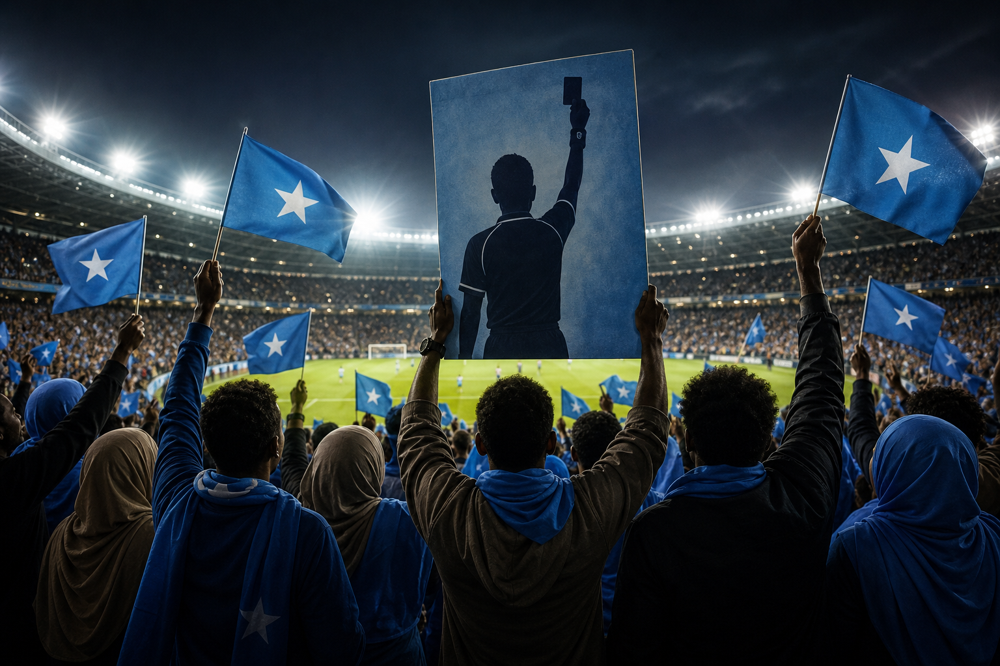

What happened
The incident in plain facts
Omar Abdulkadir Artan, 34, flew to the United States on Saturday 6 June 2026 to join FIFA’s World Cup referee camp in Miami. He carried a valid US visa and a diplomatic passport issued to smooth travel after earlier visa problems, according to Somali officials quoted by the BBC.
What followed, by his account and reports from international media:
- Landing at Miami International Airport after a connection from Istanbul.
- Roughly 11 hours of questioning by US Customs and Border Protection (CBP).
- Hours in a holding area, then a flight back to Istanbul — not into the referee seminar he had trained years to reach.
- On Monday, FIFA removed him from the list of World Cup match officials.
CBP said the traveller was “inadmissible due to vetting concerns.” No detailed public charge sheet followed. Later, unnamed US officials told reporters the case involved “association with suspected members of terror organizations” — allegations Artan and Somali authorities have not accepted in public.
“I'm just simply a referee who's trying to live his dream — the biggest dream of my life, to come to the World Cup.”
— Omar Artan, quoted by the New York Times / BBC Sport

Why this is bigger than one airport
What makes this incident unique
Referees miss tournaments through injury or form every year. Artan’s case is different because the barrier was not football — it was border policy on the eve of the world’s biggest sporting event.
- First Somali referee ever selected for a World Cup finals — a first for an entire football nation.
- CAF Men’s Referee of the Year 2025 — not a fringe official, but Africa’s top-rated man in the middle.
- Visa in hand — the usual story is “couldn’t get paperwork”; here the paperwork existed and entry was still refused.
- FIFA’s own delegate — not a fan, player or journalist, but a member of the governing body’s appointed officiating pool.
- Tri-host logistics — all 52 referees must base in the US; Mexico and Canada games are unreachable if you cannot enter America.
That last point matters for fans: if FIFA cannot guarantee its referees a seat at the table, what does that say about the “open World Cup” narrative for smaller nations and diaspora communities trying to travel?
The man behind the whistle
A career built where football barely had a chance
Born in Mogadishu in 1992, Artan grew up as Somalia’s league system struggled through conflict and instability. Football did not stop — but it was never easy. A leg injury ended his playing days early; he stayed in the game as a referee on neighbourhood pitches, then the Somali First Division, then the continent.
His climb, step by step:
- 2018 — FIFA international list; one of a handful of Somali officials at global level.
- January 2024 — first Somali to referee at Africa Cup of Nations (Tunisia vs Namibia).
- 2025 — sole Sub-Saharan centre referee at the FIFA U-20 World Cup; CAF Champions League final in Cairo (Pyramids vs Sundowns).
- November 2025 — crowned CAF Best Male Referee in Rabat — “a milestone for CECAFA refereeing,” in the words of regional officials.
- 2026 — named among 52 World Cup officials; one of only three African centre referees on the list.
President Hassan Sheikh Mohamud had called him “a symbol of inspiration for the new generation of Somalis.” FIFA itself had invested in Somali referee training as security improved — pausing for years when it could not. The US trip was supposed to be the reward: Pierluigi Collina’s Miami seminar, the biggest stage, a deserved chapter.
Instead, a young official from one of football’s hardest countries became the face of a tournament controversy before kickoff. That is why this story travels — it is not bureaucracy; it is a human arc cut off at the gate.

Somalia stands with him
Reaction at home and the news wave
If you scan Somali social media and regional sports pages, one side dominates: sympathy for Artan, anger at the outcome, pride in what he already achieved.
- Supporters at Mogadishu Stadium brought his photo to domestic league matches — a hero’s welcome before he even landed back home.
- Government advisers condemned a decision that “undermines fairness and the spirit of fair play.”
- Hiiraan Online named him Person of the Year 2025 — the story did not end at the airport.
- On return, Artan thanked CAF, FIFA and Somali fans; he told media he hopes to reach a future World Cup.
- CAIR and human-rights groups framed the case inside wider travel-ban debates — trending alongside Iran visa rows and Iraq airport detentions.
Western headlines split between human interest (“who is Omar Artan?”) and governance (“has FIFA lost control?”). In Somalia, the tone is simpler: our best was sent back; the world watched.

Who answers?
Official reactions — and the silence that speaks
Fans looking for a clear villain and a full explanation will not find one on the record. That gap is itself the story.
United States
- CBP — standard language: routine inspection, “vetting concerns,” inadmissible. No public dossier.
- White House FIFA Task Force (Andrew Giuliani) — said there was a “very good reason” but declined details on camera.
- Anonymous briefing — terrorism “association” cited to select outlets; Artan has not been charged in open court.
Somalia is on the US travel-restriction list. World Cup hosts promised global access; critics ask whether “merit” means anything if a CAF award winner with a visa can still be turned around at the gate.
FIFA
- Confirmed Artan cannot officiate; said host governments control visas and entry.
- Quoted US authorities: his status “will not be changed at present.”
- No public fight with Washington — at a tournament where FIFA and the US administration have been visibly close.
BBC Sport asked the uncomfortable question outright: who is running this World Cup? For fans, Artan became the symbol — a referee with nothing to sell but integrity, caught between football’s ideals and immigration politics. Whether you blame policy, FIFA’s quiet diplomacy, or both, the dream ended in Miami — and the tournament started without Somalia’s first official on the pitch.